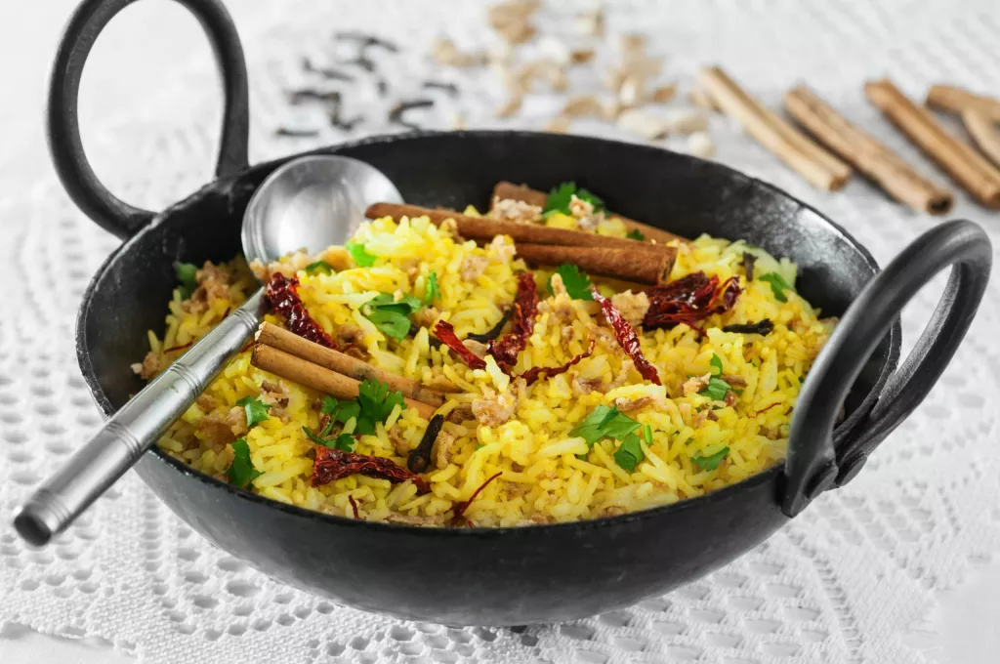

East African Pilau Rice
East African Pilau is a traditional, beautiful fragrant rice dish made with numerous aromatic spices thad adds an amazing depth of flavor to the rice. It can be made with aither beff, mutton or chiken.
Pilau has a wonderful balance of flavors. It is a festive dish, which is never missing during special occasions or events. Unlike the Indian pilau, the East African version does not use curry and it's less spicy
Ingredients
- 1 teaspoon cloves
- 2 tablespoon cumin seeds
- 1/2 tablespoon black peppercorn seeds
- 12 pods Cardamon
- 1 stick cinnamon
- 2 cups rice
- 5 potatoes medium size [peeled and cut into quarters]
- ¼ cup vegetable oil
- 2 Red onions medium size [thinly sliced]
- 4 cloves garlic minced
- 2 tablespoons ginger minced
- 1 serrano chile finely chopped
- 1 tablespoon pilau masala
- 2 beef stock cubes
- ¼ cup fresh cilantro roughly chopped
- 1 lb beef sirloin cubed
- 3 Roma tomatoes diced
- 4 cups water
- 2 Bay leaves
- Salt to taste
PILAU MASALA - PILAU SPICES
RICE PILAU
Steps
- Place the cumin, black peppers, cinnamon, cardamom and cloves in a dry pan.
- Roast over low heat until warmed through and fragrant and blend (used a coffee grinder) until smooth.
- You need just 1 to 11/2 tablespoons for this recipe (depending on how fragrant you want the rice to be).
- Heat a stockpot on medium-high heat. Add oil and heat until hot but not smoking.
- Add the sliced onions and fry for 10-15 minutes or till the onions starts to turn golden brown (be careful not to burn it).
- Add the garlic, ginger, serrano pepper, Cook for 1-2 minutes, until fragrant.
- Add the cubed beef, pilau masala, beef stock cubes, bay leaves, cilantro, and salt to taste. Cook until the meat browns and caramelizes stirring occasionally about 8 to 10 minutes.
- Add the diced tomatoes and cook for 4-5 minutes, until the tomatoes have released their liquid.
- Stir in the potatoes and the water. Bring to a boil and cook for 10 minutes.
- Stir in the rice, and cover tightly with a foil paper (to keep the steam in) if necessary. Reduce the heat to low and cook for 20 minutes, until the rice is cooked and the liquid is absorbed.
- Once the rice is dry, remove the foil paper and fluff with a fork to ensure the seasonings are well distributed all around the rice.
- Serve hot with fresh Kachumbari – salsa. Enjoy!